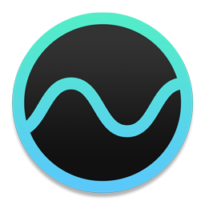

A005 Noizio

Noizio是我入手MacBook以来，发现的最惊艳的App。作为一款白噪声应用，Noizio究竟好用到什么程度呢？这么说吧，现在只要是使用笔记本，我基本上就抛弃了听音乐，而是逐渐喜欢上沉浸在白噪声中去写东西。尤其是夜深人静的时候，打开Noizio，仿佛进入了无人之境，整个世界只剩下时间和自己。
我记得之前提到过一个类似的移动端应用，叫做MUJI to Relax，也是一款优秀的白噪声工具，Noizio和它最像的地方，就是内敛的功能设计：一点多余的功能和交互都没有。Noizio的核心功能就是提供多种可以自由混合搭配的白噪声，是的，你没有看错，可以混合多种白噪声！具体的说，官方共提供了15种不同的声音，其中我最喜欢的是October Rain和Sunny Day。
使用起来也是相当的方便：选择几种（超过两三种其实会有些奇怪）喜欢的声音，调整每种成分的声音大小，然后点击播放就OK了。如果你对某次的配比方案十分喜欢，可以顺手将配比方案保存起来以便之后使用。当然你也可以做一个定时，确定Noizio关闭的时间，不过我通常是离开屏幕的时候才会想起来关掉它，因为作为背景声音实在是太！爽！了！
在结识这款应用之前，我可能会笨拙的在某音乐应用里选择轻音乐频道，或者拿出手机打开类似的背景电台。很显然，这样做不仅麻烦，而且播放的声音总是不尽如人意，甚至对当前要做的事情产生听觉上的干扰。现在呢，可以很自然的带上耳机，尽情的享受时间和工作！